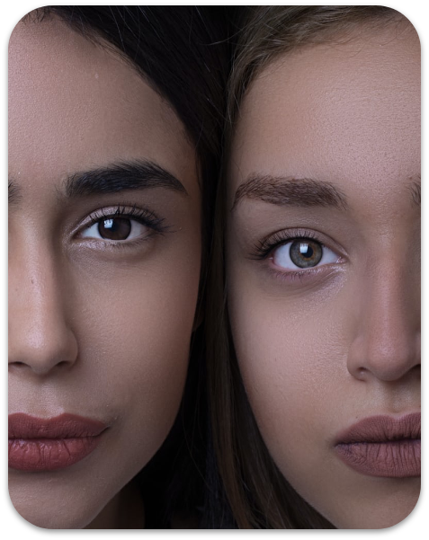
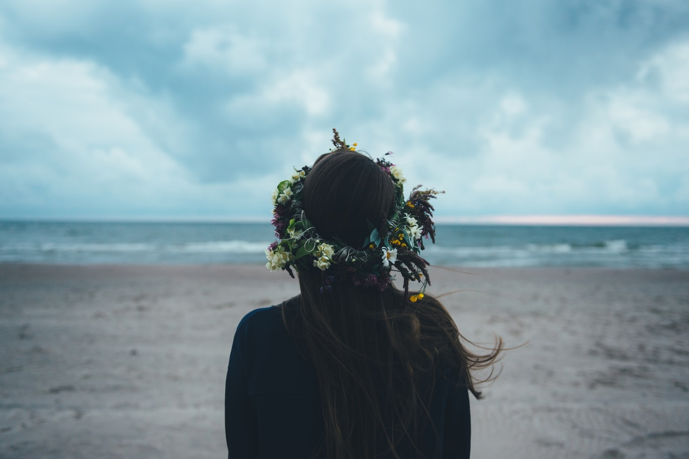

The Face Studio
One of the main projects under Beauty&Lifestyle – is Face Studio – an online platform providing courses to learn and practice facial exercises, facial self- massage techniques, tips on skincare routine and products.
Come with us and illuminate from within
Beauty&Lifestyle, founded by Jane Doe in April 2020, is an online platform to provide educational courses to the public.
The purpose of the company is to educate people how to live a natural lifestyle with better eating habits, with better self-care habits and more physical movement.
The online portal provides with various courses that encourage, educate and support people to trigger new habits, bring them closer to nature and to a deeper balance within.
One of the main projects under Beauty&Lifestyle – is Face Studio – an online platform providing courses to learn and practice facial exercises, facial self- massage techniques, tips on skincare routine and products.
Jane Doe Lifestyle portal is another project through which the public can learn various lifestyle habits that will benefit their physical and emotional health. Jane Doe Lifestyle offers online courses as well as private online consultations.
Beauty&Lifestyle looks forward to setting up more projects and launching more online courses which will transform the lives of many.